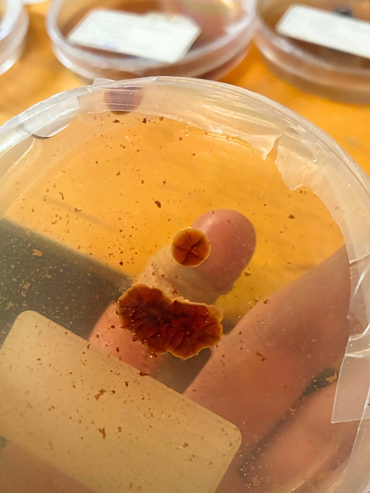

The Bottleneck
In my own work with fungal specimens, cultures, and long-horizon biological systems, the same bottleneck appears repeatedly:
early observations are noticed, but not recorded in a structured form that remains portable, inspectable, and reusable.
A researcher sees a pigment band, a morphological anomaly, a repeated structure across field and culture, or a subtle environmental pattern. That signal may matter a great deal. But it is usually captured informally: in a photo roll, in scattered notebook fragments, in memory, or in a narrative written much later.
By the time a result becomes a paper, much of the original observational reasoning has already been compressed into interpretation.
This is not a minor inconvenience. It is a genuine bottleneck in discovery, especially in fields where early visual anomaly detection matters: biology, mycology, microbiology, ecology, developmental systems, and field-to-lab work more broadly.
Science records conclusions far better than it records observations.
Why This Becomes Urgent Now
AI changes the urgency of this bottleneck.
We are entering a period in which scientific text, analysis, and interpretation can be generated extremely quickly. That creates obvious upside, but it also creates a structural asymmetry:
- interpretation is becoming abundant
- observation remains weakly structured
- the link between evidence and claim is at risk of becoming looser rather than tighter
The problem is not that AI exists.
The problem is that the infrastructure for disciplined observation has not improved at the same pace as the infrastructure for generated interpretation.
If science gets much faster at writing before it gets better at preserving evidence, it risks drifting toward narrative fluency rather than evidence-anchored discovery.
What Is Missing
Science already has many structures for results:
- papers
- grants
- methods sections
- supplementary data
- figures and captions
What it lacks is a lightweight, public, portable structure for recording artifact-first observations before they harden into narrative.
In many disciplines, especially biology, discovery starts from artifacts:
- biological specimens
- cultures and colonies
- microscopy images
- morphological structures
- field patterns
- behavioral traces
The artifact is the dataset.
Yet scientific infrastructure is still mostly organized as though the primary scientific object were the explanation rather than the trace.
Trace Invariance Logic
I propose a minimal documentation framework organized around one rule:
Trace precedes interpretation.
Trace refers to the inspectable artifact produced by the system under study. It is not language, metadata, or labeling convention. It is the physical or visual residue available for inspection.
From that starting point, a report should separate three layers clearly:
- Artifact — what exists to be inspected
- Observation — what can be said directly from the artifact
- Interpretation — hypotheses or explanations downstream of the observation
Trace Invariance Logic is a minimal ontology and constraint grammar for enforcing that separation.
It is designed especially well for machine reasoning systems operating on visual data, because it does not ask the model to be creative. It asks the model to stay disciplined.
The point is not to help AI write science faster. The point is to constrain AI so that it must stay anchored to inspectable artifact.
The Reasoning Pattern It Formalizes
A common pattern in real biological work is recognizing invariance across contexts.
For example:
- a pigment band visible in a fruiting body that also appears in cultured mycelium
- a morphology observed in the field that persists under laboratory isolation
- a repeated visual trait across multiple environmental observations
Researchers use this type of reasoning constantly. But it is usually informal, local, and hard to preserve as a portable record.
Trace Invariance Logic provides a simple way to make that reasoning legible.
When an invariant visual pattern persists across contexts, confidence in the observation can increase even before molecular confirmation.
Example: Fungal Isolation Without Sequencing Every Culture
This framework emerged from my own experience isolating fungal strains from wild specimens.
Like many independent mycologists, I do not sequence every culture. Identification often relies on recognizing correspondences between the original specimen and the cultured mycelium.
These correspondences may include:
- pigment expression
- hyphal growth patterns
- oxidation reactions
- colony morphology
- growth texture or density
The same signal expressed in culture:

A simple artifact-first report might look like this:
Artifact
Photograph of a wild bolete mushroom sliced in half.
Observation
Red pigmentation concentrated near the lower stipe region.
Laboratory Artifact
Mycelium culture exhibiting diffuse red pigmentation.
Invariant Pattern
Red pigmentation is present in both the specimen and the cultured mycelium.
Interpretation
The culture likely derives from the collected specimen.
Hypothesis
Pigment concentration near the stipe base may indicate a production zone that remains accessible in culture.
This is not a substitute for sequencing or formal analysis. It is a better way to preserve the observation layer that usually disappears before later validation happens.
The Hypothesis
Hypothesis: a structured artifact-first reporting protocol will improve the reproducibility, retrieval, and downstream usefulness of early-stage biological observations compared with conventional notebook-and-narrative documentation.
This is intentionally narrow. The claim is not that artifact-first reporting solves science in general. The claim is that it improves one neglected stage of science: the preservation of early observational evidence.
A Concrete Pilot
The strongest place to test this idea is a domain where visual correspondence matters and early observations are often under-structured.
Proposed pilot domain: fungal field-specimen to culture workflows.
A modest pilot could compare conventional notes against artifact-first reports generated with Trace Invariance Logic across a small number of practitioners.
The test would ask whether artifact-first reports improve:
- time to produce a usable observation record
- clarity of the link between artifact and interpretation
- ability of a second reader to recover the key observation
- consistency of report structure across repeated use
- usefulness of the report for later hypothesis generation or culture follow-up
This pilot can fail informatively. If artifact-first reports do not improve clarity, retrieval, or downstream usefulness, then the bottleneck has been overstated. But that is exactly why it is a good experiment.
Why This Is Not Just an AI Convenience Tool
There is a meaningful difference between using AI to accelerate existing scientific habits and using AI to impose better evidentiary discipline.
This proposal is in the second category.
The system I am building is not meant to be a generic writing assistant. It is meant to be a constrained observation layer. In its current form, the “Runtime” already acts as a structured reasoning environment that can turn images and observations into artifact-first field records.
The next step is to make that reporting layer better, more consistent, and eventually compatible with camera-based systems.
The long-term aim is not AI-generated prose. It is open observation infrastructure.
Three Open-Source Goals
The broader program has three linked goals:
- Build an open artifact-first reporting protocol for field reports, notebook pages, SOP-style observation records, and visual scientific documentation.
- Build an open repository of artifact-first reports that functions both as a scientific archive and as training data for future observation systems.
- Develop a camera-based observation layer capable of turning visual artifacts into structured reports under the same evidentiary constraints.
This matters especially for the parts of science that are richest in discovery and weakest in infrastructure: field observations, phenotypic anomalies, culture transitions, and independent or underfunded biological work that rarely fits neatly into publication-first systems.
Toward an Autonomous Biological Observatory
Once observation is structured around artifact, automation becomes much more realistic.
A camera system does not need to understand biology in the abstract. It needs to detect, compare, and structure trace.
From that, it can generate artifact-anchored reports at a rate far beyond what most humans can sustain manually.
This suggests a larger possibility:
- imaging biological artifacts continuously
- identifying recurring invariant patterns
- generating artifact-first reports in real time
- separating observation from interpretation automatically
In other words: an autonomous biological observatory.
Not a system that replaces scientists, but one that dramatically increases the rate at which structured observations can be preserved before they disappear.
A Testable Path Forward
The first step is simple and practical:
- release the reporting layer itself
- use it on real artifact-rich workflows
- compare it against conventional documentation
- publish the reports and their outcomes openly
A modest budget could support:
- further development of the Runtime as an artifact-first reporting environment
- an open repository of artifact-anchored reports
- a small pilot in fungal observation workflows
- initial camera-based experiments for invariant pattern detection
The goal is not to replace publications. It is to create an open pre-publication layer of structured observation that science currently lacks.
Rebuilding the Observation Layer of Science
Scientific publishing systems were built for an era in which generating interpretation was slow and expensive.
Today the opposite is becoming true.
Interpretation is abundant. Reliable observation is not.
AI makes interpretation abundant. Artifact-first science makes it accountable.
If AI is going to reshape scientific practice, then science needs tools that preserve the connection between claims and inspectable evidence.
Trace Invariance Logic is one proposal for that missing layer.
Its goal is simple: capture discovery at the moment it occurs while keeping reasoning anchored to artifact.
In an age of accelerating scientific text production, the most valuable rule may still be the oldest one:
trace first, interpretation second.
About this essay
This essay was written for the Astera essay competition on bottlenecks in science.
If you’d like to discuss artifact-first reporting, open observation infrastructure, or camera-based biological observatories, you can reach me at hiramdunn61@gmail.com.